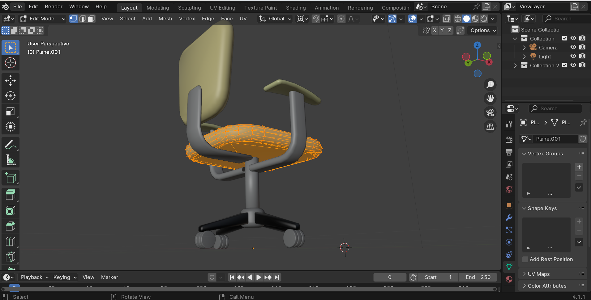
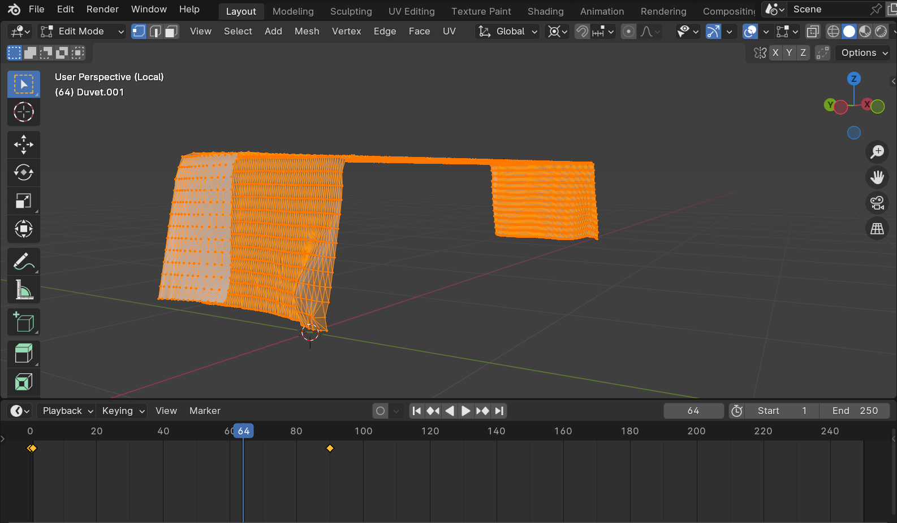

This website was created as an interactive bedroom designer, where the user would not only get to reimagine their own dream bedroom from different parts, but also have the chance to view each individual part of the bedroom as 3D models.
3D models
I designed the models for the bedroom and its parts using Blender, where I designed three bedroom shapes, three bed designs and three different kinds of furniture.
Each model has their own unique animations I created to add some character and life to them, as opposed to them just being static models.
The textures I used ranged from basic flat colours with different materials to allow light to bounce off it, to image textures for the bedroom wallpapers.


Design
Using Bootstrap, I implemented lots of elements that served as the basis for my website.
I started off by creating a header and a navbar, the latter using a custom logo I had made in ibisPaintX.
I then created an interactive design on the main page using CSS, where the model would be situated.
I used three.js to add a light to my scene as well as include a hemisphere light so users could move around and control to their liking.
For the website's aesthetic and design, I wanted something with calm, light colours to give off a 'dream-like' feel, so I used colours of blue and light yellow to emulate that feeling.
This was based on feedback I previously had from fellow students that the aesthetic did not feel very unique, and felt more basic, which is the reason for the choice of colours.
Integration
Instead of simply using flat colours for the background images and navigation bars, I put together my own designs in ibisPaintX and added them through CSS into my websites.
Each page of the website had their own unique design corresponding to it to give them their own identity and make them stand out, as opposed to sticking to a single background for the entire website.
I created multiple different variants of each background and implemented them in CSS so that when the screen is resized, the background would shrink to match the size of the window.
Interaction
To allow the users to interact with the 3D models, I added an Orbit Control feature to the canvas with a JS script.
In addition to simply dragging on the model to move it around in the 3D space, I also added the feature to rotate the model in 15 degree increments, as well as view the wireframe.
One feature I included was the ability to view different models in the same canvas so I added buttons below that let users switch between models, all with their own unique designs and animations.
This was an easy to create feature that I simply copied into the other pages, only changing the names of the models to match the ones I want to use for the page.
Implementation
To test my models lighting, I had to experiment with different kinds of materials for the textures in Blender to see which ones showed more light bouncing off to make it visible in the canvases.
From this testing, I deduced that using a slightly metallic material with a lower roughness for all the textures would result in more light being shown on the models.
Additionally, I conducted tests of the website with fellow peers in order to gain some additional feedback, with everyone finding the website to be functional, but lacking its own identity, in terms of appearance.
This is when I decided to design my own background decals for each individual page.
Deeper Understanding
I followed a similar format to the demonstrations shown in the lab videos but rather than only using one model with two animations, I implemented three different models, each with their own unique animations, depending on what the object was.
For example, the doors on each room opened differently and each piece of furniture had a different action (books falling down, chair spinning, wardrobe door opening, etc.)
For the 3D Models, I decided to create more intricate designs beyond a simple coke can, from the demonstration, and had them all as three different parts
making up an entire bedroom (room base, bed and furniture), which made all of them feel linked to each other in a way, hence making each page of the website feel more connected to each other.
Implementation and publication
I have included an about page which details the design process of the website and describes how different parts of the code work.
I have zipped and my website and I have tested that my folder can be opened in Visual Studio Code when unzipped and works as it should.